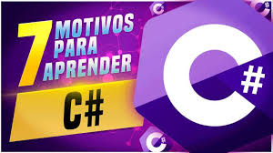

Professor da escola de desenvolvimento Back-end, Antonio Ajax.
Linguagem Python
Saudações a todos! Sou o Professor Ajax e estou aqui hoje para apresentar a vocês o mundo da
linguagem de programação Python. Ao contrário das salas de aula tradicionais, onde meus
colegas professores ministram palestras em faculdades, estou animado para compartilhar meu
conhecimento sobre Python com vocês em um ambiente mais informal e prático.
Python, uma linguagem de programação interpretada e de alto nível, é a estrela deste curso. É
uma ferramenta poderosa que tem conquistado corações e mentes de programadores em todo o
mundo devido à sua sintaxe limpa, legibilidade e ampla gama de aplicações.
Durante nosso tempo juntos, exploraremos desde os conceitos básicos até os mais avançados,
mergulhando em estruturas de dados, controle de fluxo, funções e bibliotecas essenciais do Python.
Ao final deste curso, vocês estarão equipados com as habilidades necessárias para desenvolverem projetos
incríveis e resolverem uma variedade de problemas do mundo real utilizando Python.
Estou animado para embarcar nesta jornada de aprendizado com vocês e estou aqui para apoiá-los em cada passo >
do caminho. Então, sem mais delongas, vamos mergulhar de cabeça no incrível universo da programação Python!
Linguagem Java
Java é uma linguagem de programação versátil e robusta que tem sido um pilar da indústria de desenvolvimento
de software por décadas. Com sua portabilidade, eficiência e ampla adoção em uma variedade de aplicativos,
desde desenvolvimento web até dispositivos móveis e sistemas corporativos complexos, Java continua a ser
uma escolha popular entre programadores e empresas.
Durante nosso tempo juntos, exploraremos desde os conceitos básicos até os mais avançados, mergulhando em
tópicos como estruturas de dados, orientação a objetos, manipulação de exceções e muito mais. Além disso,
aprenderemos a utilizar o vasto ecossistema de ferramentas e frameworks Java, como Spring e Hibernate, para
desenvolver aplicações poderosas e escaláveis.
Ao final deste curso, vocês estarão equipados com as habilidades necessárias para desenvolverem projetos
impressionantes e enfrentarem desafios complexos utilizando Java. Estou animado para embarcar nesta jornada
de aprendizado com vocês e estou aqui para apoiá-los em cada passo do caminho. Então, sem mais delongas,
vamos mergulhar de cabeça no incrível universo da programação Java!
Liguagem C#

O C# (pronuncia-se "C Sharp") é uma linguagem de programação moderna, orientada a objeto e fortemente tipada.
O C# permite que os desenvolvedores criem muitos tipos de aplicativos seguros e robustos que são executados
no .NET. O C# tem suas raízes na família de linguagens C e os programadores em C, C++, Java e JavaScript a
reconhecerão imediatamente. Este tour dá uma visão geral dos principais componentes da linguagem em C# 8 e
anterioe. Se quiser explorar a linguagem por meio de exemplos interativos, experimente os tutoriais de
Introdução à linguagem C#.
C# é uma linguagem de programação orientada a objetos e orientada a componentes. C# fornece construções de
linguagem para dar suporte diretamente a esses conceitos, tornando C# uma linguagem natural para criação e
uso de componentes de software. Desde sua origem, o C# adicionou recursos para dar suporte a novas cargas
de trabalho e práticas emergentes de design de software. Em sua essência, o C# é uma linguagem orientada a
objeto. Você define os tipos e o comportamento deles.
JavaScript é uma linguagem de programação que permite a você implementar itens complexos em páginas web — toda vez que
uma página da web faz mais do que simplesmente mostrar a você informação estática — mostrando conteúdo que se atualiza
em um intervalo de tempo, mapas interativos ou gráficos 2D/3D animados, etc. — você pode apostar que o JavaScript
provavelmente está envolvido. É a terceira camada do bolo das tecnologias padrões da web, duas das quais (HTML e CSS)
nós falamos com muito mais detalhes em outras partes da Área de Aprendizado.